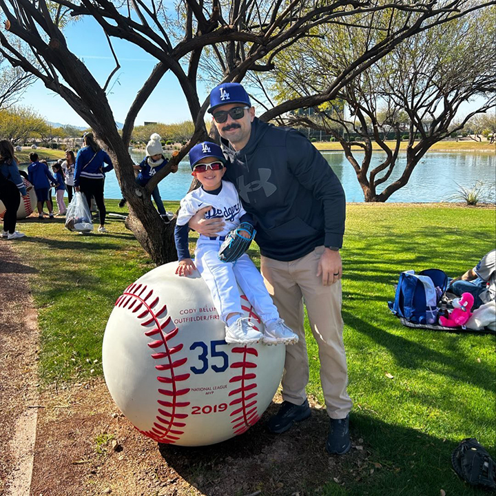
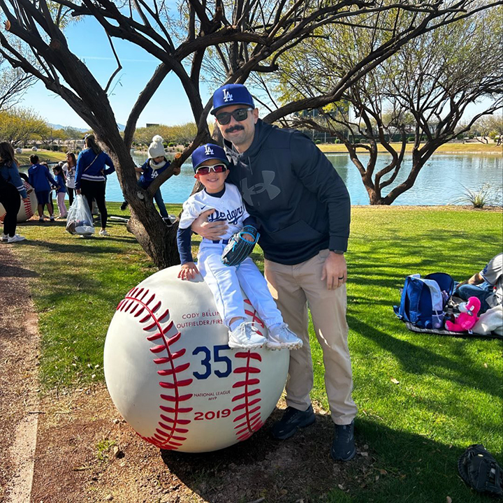

About Me
Hello everyone! My name is Rob P., I’m 37 years old, and I’m from Lancaster California. I’m currently in the Air Force and have been for over 18 years. I joined the military as a Crew Chief and have had the chance to work multiple airframes. On top of working the line as an ADCC and DCC, I have worked CDDAR, Aero-Repair, Wheel & Tire, Quality Assurance, Flight Line Expediter, Section Chief, Production Superintendent, and I am now a Quality Assurance Superintendent.
I began programming as a hobby, stemming from my love for gaming. Before starting my degree plan, I took time to learn C#, Python, XML, JSON, SQL, and a bit of HTML. Ideally, I’ll take my knowledge gained from a Computer Science degree and focus on shifting from programming supplementary APIs for games to creating my own. My favorite games are built using the Unity Engine, which uses C#. However, I recognize that Unreal Engine is where the power is. After finishing my degree, I plan to focus on learning C++ and any other programming language I can.
Check out my previous attempt at making a website: